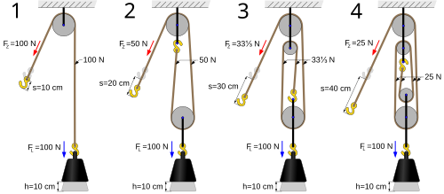

Polea
Una polea es una máquina simple, un dispositivo mecánico de tracción, que sirve para transmitir una fuerza.
Consiste en una rueda con un canal en su periferia, por el cual pasa
una cuerda que gira sobre un eje central. Además, formando conjuntos
—aparejos o polipastos— sirve para reducir la magnitud de la fuerza necesaria para mover un peso.
Según la definición de la Goupillière, «la polea es el punto de apoyo
de una cuerda que moviéndose se arrolla sobre ella sin dar una vuelta
completa»[1] actuando en uno de sus extremos la resistencia y en otro la potencia.
